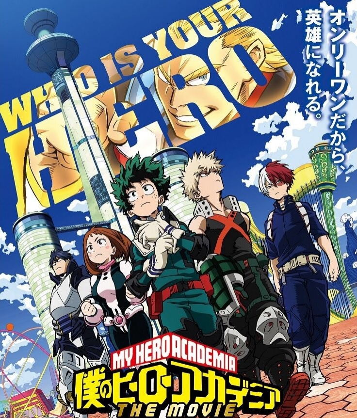
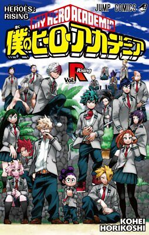
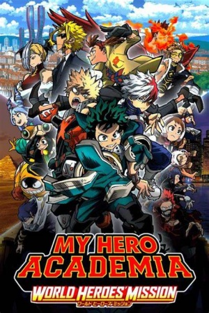

My Hero Academia Movies
Overview:
1. My Hero Academia: Two Heroes (2018)
Izuku Midoriya accompanies All Might to I-Island, a high-tech research facility specializing in Quirk support technology. The trip takes a dangerous turn when villains take the island hostage, aiming to steal a powerful device. As secrets from All Might's past emerge, Midoriya and his classmates must work together to stop the villains and save the island.
2. My Hero Academia: Heroes Rising (2019)
Class 1-A is tasked with protecting Nabu Island, a peaceful community with minimal crime. However, their mission turns perilous when Nine, a villain with multiple devastating Quirks, arrives seeking a young boy whose Quirk holds the key to his plans. With no professional heroes to assist them, the students face their greatest challenge yet, testing their teamwork, courage, and determination in a battle for survival.
3. My Hero Academia: World Heroes' Mission (2021)
When Humarise, a radical anti-Quirk organization, unleashes a dangerous plot to eradicate Quirk users worldwide, the stakes reach a global scale. Izuku Midoriya, falsely accused of mass murder, must clear his name while working with Bakugo and Todoroki to stop the group. Racing against time and battling powerful enemies, the trio fights to prevent a catastrophic event that threatens both heroes and civilians.